|
AXO X1
|
|
AXO X1
|
In this chapter the interaction between the tasks shall be described. To describe these interaction some typical sequences shall be exemplarily described with the use of message sequence charts, generated with mscgen (see https://www.mcternan.me.uk/mscgen/).
On startup boost converter and power manager task are the first tasks started from main function. Initially power manager task send a resume message to boost converter to start battery loading and start the inital LTE start delay timer. On timer expiry power manager send a resume message to LTE connector task and these try to connect to PDN. On success LTE connector task receives PDN_EVENT_ACTIVATED from PDN and inform MQTT Connector task and power manager task that LTE is connected. On receiving the eLteConnected message the MQTT Connector try to connect to MQTT Broker. On success the broker send ConnAck to MQTT Connector which inform power manager by sending eMqttConnected. On receiving the eMqttConnected message the power manager send reset cause and boot count to data manager. The data manager collect all received data in metrics JSON string by calling function metrics.add of the MetricsBuilder helper class.
Furthermore the power manager request sensor temperature and humidity by sending request message eShtcxReport to Shtcx task, which read the information b calling the functions readTemperature and readHumidity and send it directly to data manager task with the messages eShtcxTemperature and eShtcxHumidity, where both will be added to metrics JSON string by calling function metrics.add of the MetricsBuilder helper class.
Battery metrics are requested by sending the message eBattReport from power manager task to battery manager task, which send message eAdcReport to ADConverter task. ADConverter task retrieve the information by calling function sample() and send it directly to data manager task with massage eAdcData, where it is added to metrics JSON string by calling function metrics.add().
With message eLteReport from power manager task to data manager task the LTE metrics data will be requested, added to metrics JSON string and send to MQTT broker (see Message Sequence Chart LTE Metrics Collect). After sending message eLteReport the power manager task starts metrics TX intervall timer for the next metrics wakeup / sleep cycle (see Message Sequence Chart Cyclic Metrics Transmission).
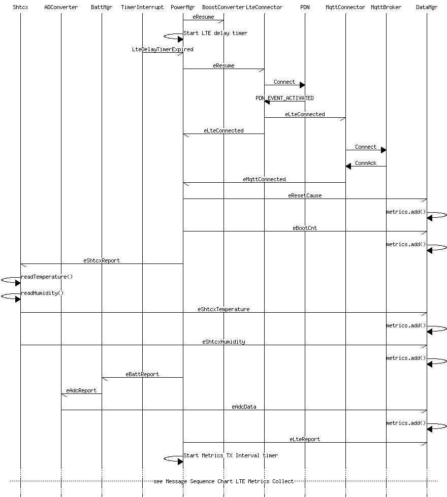
The data manager is the responsible task to collect all metrics data. Some data of the metrics must be explicitly requested by the data manager, while others will be send spontaneously by the LTE Monitor class. The following table gives an overview od metrics data.
| Metric | Description | Trigger |
|---|---|---|
| eLteLinkQuality | Message from LTE Monitor task | On Request |
| eLteBattVoltage | Message from LTE Monitor task | On Request |
| eLteTemperature | Message from LTE Monitor task | On Request |
| eLtePsmAct | Message from LTE Monitor task | On Request |
| eResetCause | Message from power manager task, once per startup | MQTT connected |
| eBootCnt | Message from power manager task, once per startup | MQTT connected |
| eAdcData | Message from ADConverter task | On Request |
| eShtcxTemperature | Message from shtcx task | On Request |
| eShtcxHumidity | Message from shtcx task | On Request |
| eLteIMSI | Message from LTE Monitor task | On Request |
| eLteFwVersion | Function call getFwVersion in MetricsBuilder finalize function | At Startup (Fixed value) |
Start of LTE data collection is initiated by power manager task, which requests a LTE report, by sending eLteReport message to data manager task. Data manager forward the message to LTE monitor task, which collect the LTE data by calling the functions psm_read, getIMSI, getBattVoltage and getTemperature. After retrieving all data, it will be copied into messages eLteLinkQuality, eLteIMSI, eLtePsmAct, eLteBattVoltage and eLteTemperature and these messages will be send to data manager task, where the information will be added to metrics JSON string by calling function metrics.add of the MetricsBuilder helper class. Data Manager task checks if metrics data are complete (see note), finalize the metrics JSON string and send it to MQTT connector task. Afterwards data manager clear the metrics data by calling function reset() of helper class MetricsBuilder. MQTT connector task call its publish method, which send the received metrics JSON string with topic /device/DEVICE_ID/metric/update to the MQTT broker.
With publish request the LTE modem wake up from sleep mode, PDN send event LTE_LC_EVT_MODEM_SLEEP_EXIT and LTE connector task informs itself, the power manager task and the MQTT connector task with message eLteSleepExit. The power manager send message eResume to boost converter task. It calls function on(), which starts battery loading process by switching pin P0.21 into active state.
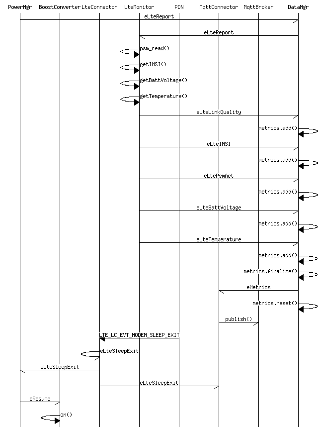
Transmission If the metrics TX intervall timer expires, the timer interrupt will wake up the nRF9160 and a timer expired messege will be send to power manager task, which send an eResume message to the boost converter task and starts the boot on timer. The boost converter task calls function on(), which starts battery loading process by switching pin P0.21 into active state.
If boot on timer is expired, timer interrupt send a timer expired message to power manager task, which requests temperature and humidity informations from shtcx task by sending message eShtcxReport. Shtcx task retrieves the information by calling the functions readTemeperature and readHumidity and send it directly to data manager with the messages eShtcxTemeprature and eShtcxHumidity, where this informations are added to metrics JSON string by calling function metrics.add()of the MetricsBuilder helper class.
Battery metrics are requested by sending the message eBattReport from power manager task to battery manager task, which send message eAdcReport to ADConverter task. ADConverter task retrieve the information by calling function sample() and send it directly to data manager task with massage eAdcData, where it is added to metrics JSON string by calling function metrics.add().
With message eLteReport from power manager task to data manager task the LTE metrics data will be requested, added to metrics JSON string and send to MQTT broker (see Message Sequence Chart LTE Metrics Collect).
After sending message eLteReport the power manager task re-starts metrics TX intervall timer for the next metrics wakeup / sleep cycle.
After publishing the metrics, PDN send event LTE_LC_EVT_MODEM_SLEEP_ENTER after a period of inactivity (because requested active time CONFIG_LTE_PSM_REQ_RAT is configured to 1 minute). The LTE connector task informs itself by sending the message eLteSleepEnter from callback function to own mailbox and inform the power manager task and the MQTT connector task also by sending the message eLteSleepEnter. Afterwards the power manager send message eSuspend to boost converter task, which calls the function off() that stops battery loading process by switching pin P0.21 into inactive state. Afterwards LTE is in low power mode and MCU also enters low power mode (if UART is disabled).
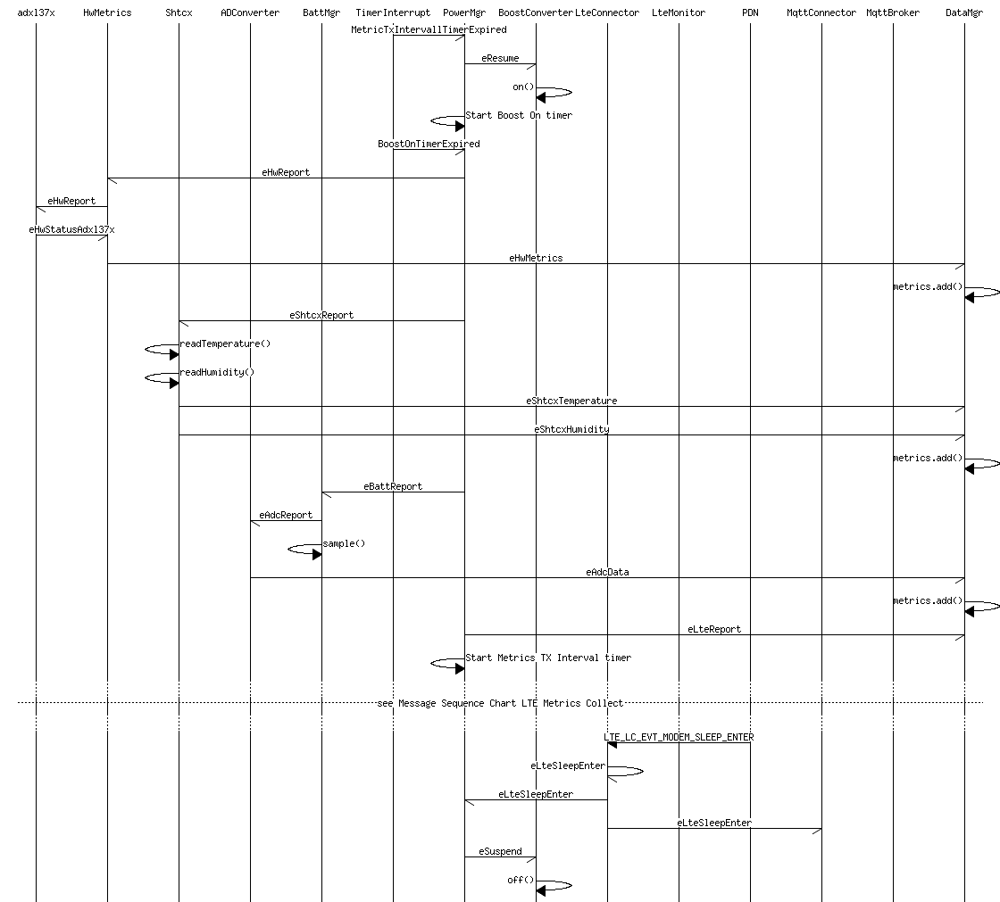
If MCU is in low power mode and trigger activity threshold of accelerometer Adxl37x is exceeded, the MCU wakes up and static sensor trigger callback fifo_handler of class Adxl37x is called, which send message eAdxl37xFifo to its own mailbox. On receiving this message AdxlDataStore task reset the data queue by calling function reset(), so that all older data can be overwritten, wake up FRAM by calling function spifram::inst()->wakeup(), store raw data in FRAM by calling function store and inform Adxl37x task with message eAdxlStorageDone that storage was done and forward message eAdxl37xSensorData to RMS task.
RMS task calculate with the received raw data the RMS x,y and z values, calculate medium and critical hit values and send these values together with a timestamp to RMS store task with message eAdxl37xRmsData by calling function update_rms. RMS store task forward message eAdxl37xRmsData to data manager task, where the x, y and z RMS values will be added to measurement JSON string and hit values will be stored in vectors by calling function measurements.add of the MeasurementBuilder helper class. Power manager task will be informed about MCU wake up with message eAdxl37xWake and the flag idle will be set to false. Furthermore the receive counter rx_cnt will be incremented by one.
On receiving the message eAdxl37xWake the power manger task send a resume message to boost converter to start battery loading and start adxl wakeup to measurement timer. While adxl wakeup to measurement timer is running further measurements can occur, see Message Sequence Chart Further Measurement for details. On adxl wakeup to measurement timer expiry, timer callback function send message eAdxlWakeupTimerExpired to power manager task, which request RMS report by sending message eRmsReport to RMS store task. RMS store task forward the message than to data manager task.
Data Manager task checks if measurement data are complete, finalize the measurement JSON string and send it to MQTT connector task. Afterwards data manager clear the measurement data by calling function reset() of helper class MeasurementBuilder. MQTT connector task call its publish method, which send the received MeasurementBuilder JSON string with topic /device/DEVICE_ID/measurement/update to the MQTT broker.
With publish request the LTE modem wake up from sleep mode, PDN send event LTE_LC_EVT_MODEM_SLEEP_EXIT and LTE connector task informs itself, the power manager task and the MQTT connector task with message eLteSleepExit. The power manager send message eResume to boost converter task. It calls function on(), which starts battery loading process by switching pin P0.21 into active state.
After publishing the measurement, PDN send event LTE_LC_EVT_MODEM_SLEEP_ENTER after a period of inactivity (because requested active time CONFIG_LTE_PSM_REQ_RAT is configured to 1 minute). The LTE connector task informs itself by sending the message eLteSleepEnter from callback function to own mailbox and inform the power manager task and the MQTT connector task also by sending the message eLteSleepEnter. Afterwards the power manager send message eSuspend to boost converter task, which calls the function off() that stops battery loading process by switching pin P0.21 into inactive state. Afterwards LTE is in low power mode and MCU also enters low power mode (if UART is disabled).
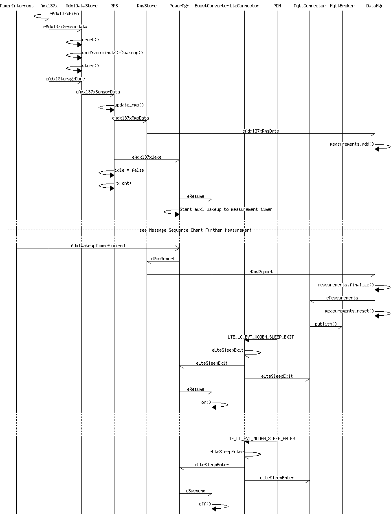
If trigger activity threshold of accelerometer Adxl37x is exceeded again, static sensor trigger callback fifo_handler of class Adxl37x is called, which send message eAdxl37xFifo to its own mailbox. On receiving this message AdxlDataStore task store the raw data in FRAM by calling function store and inform Adxl37x task with message eAdxlStorageDone that storage was done and forward message eAdxl37xSensorData to RMS task.
RMS task calculate with the received raw data the RMS x,y and z values, calculate medium and critical hit values and send these values together with a timestamp to RMS store task with message eAdxl37xRmsData by calling function update_rms. RMS store task forward message eAdxl37xRmsData to data manager task, where the x, y and z RMS values will be added to measurement JSON string and hit values will be stored in vectors by calling function measurements.add of the MeasurementBuilder helper class. Power manager task furthermore increments the receive counter rx_cnt by one.
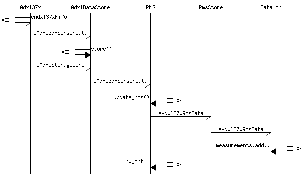
The raw acceleration data will be transmitted via HTTPS protocol. Transmission uses HTTP POST. See http_connector.
At startup the LTE connection will be established and indicated and the IMEI is read from LTE Monitor task and reported to HTTP connector task. If raw data transfer is enabled in configuration (see Config header file) and after a train has passed the device the Adxl37x task indicates with message eAdxlIdleInd that it is in idle state, HTTP connector task starts data transmission by sending eHttpRawDataSend message to its own mailbox and inform Adxl37x task about active data transfer by sending eRawDataTransferActive. Afterwards HTTP connector task opens a POSIX conform socket stream and establish the HTTPS connection. If connection is established, the HTTP POST Header will be send to remote webserver and the raw data status will be requested from ADXL store task. The received response eRawDataStatus indicating the total number of raw data entries which will be stored internally in HTTP connector task and the Raw Data Header will be constructed with IMEI, timestamp and number of raw data entries and send to webserver in the first frame. Afterwards raw data will be requested from ADXL store task and send to HTTP connector task, which put the raw data into a frame and send it to webserver. This will be continued until all raw data has been transmitted to webserver. After the last frame the Adxl37x task will be informed that data transmission has been completed with message eRawDataTransferComplete. Finally the socket stream will be closed.
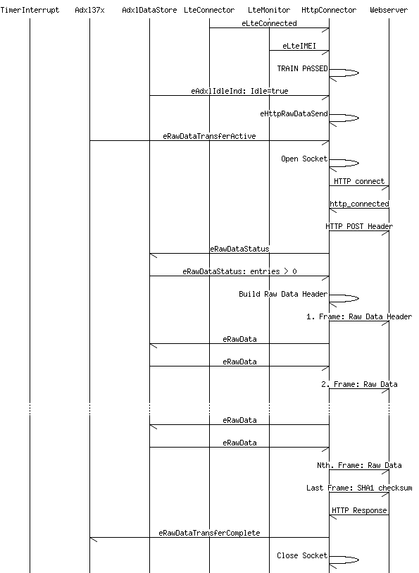
At startup the LTE connection will be established and indicated and the IMEI is read from LTE Monitor task and reported to HTTP connector task. After receiving the
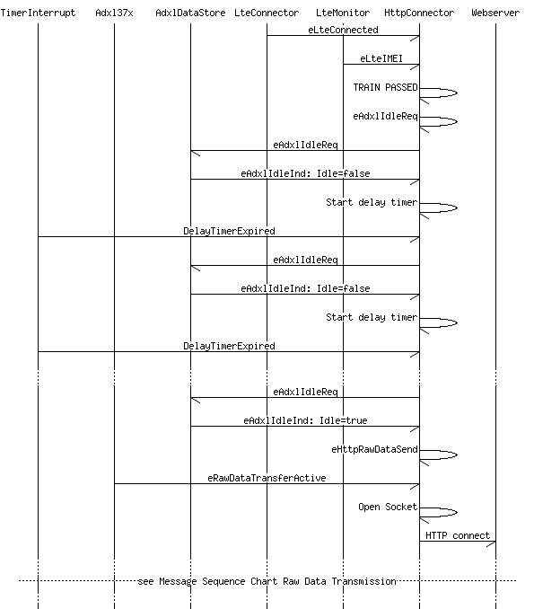
At startup the LTE connection will be established and indicated and the IMEI is read from LTE Monitor task and reported to HTTP connector task. After receiving the
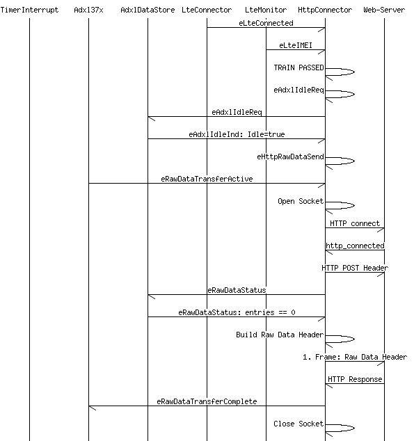
Calculation of displacement data will be done in separate steps:
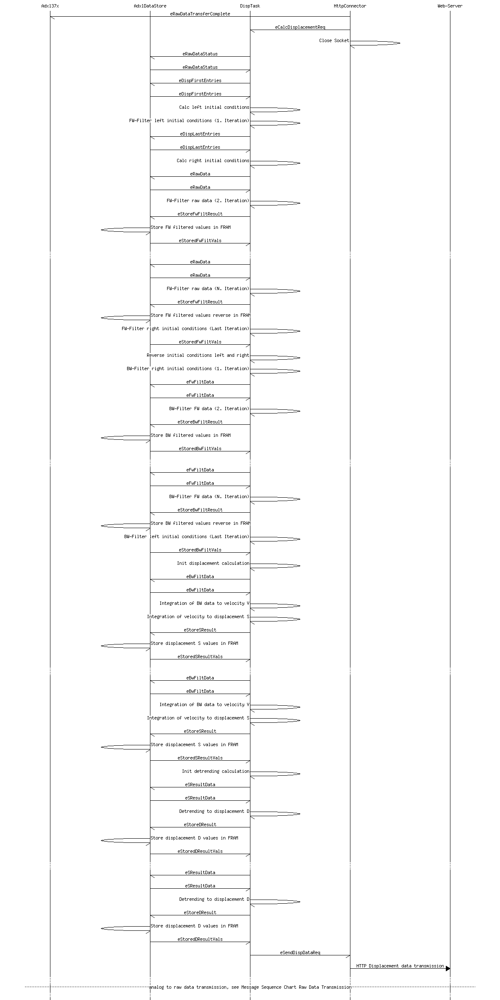
For the firmware update process the firmware over-the-air (FOTA) download library is used, which provides functions for downloading a firmware file as an upgrade candidate to the target. The firmware update task implements the interface to the FOTA download library.
The firmware update control task implements the interface to the MQTT connector task and the firmware update task. It provides the state machine to control the different states of the update process (see FwFsm). The major part of the update process, like downloading the binary firmware content and storage at desired memory location for later reboot is handled by the FOTA library. The NBT implementation triggers only the start of the update process and react on the responses from the library like success or failure events. Futhermore it triggers the reset in case of update success or retry in case of update failure.
(FOTA) Success On update success CODE2 will be transmitted to MQTT broker, which indicates the success case. Afterwards a reset of the system will be triggered. Swapping the image is part of the boot-loader MCUBoot (see update_ctrl).
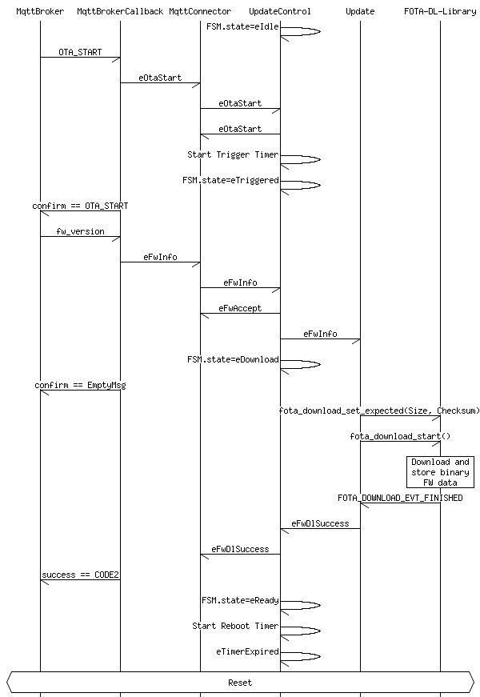
Abort In case state machine is in state eTriggered after reception of OTA_START message form MQTT broker and trigger timer expires because of absence of message FwInfo, firmware update process will be aborted and state will be reset to eIdle.
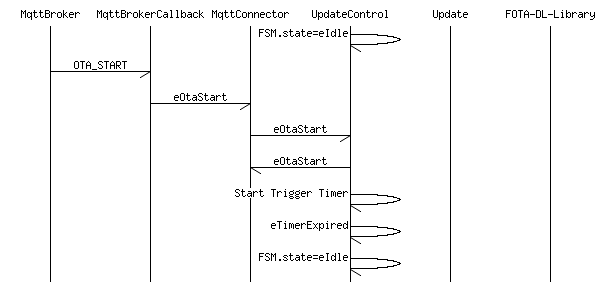
Retry In case the firmware update fails, indicated by response FOTA_DOWNLOAD_EVT_ERROR or FOTA_DOWNLOAD_EVT_CANCELLED from FOTA library, the retry counter will be incremented by 1 and the update process will be repeated by calling function fota_download_start of the FOTA library again. In this example the update succeeds after the retry.
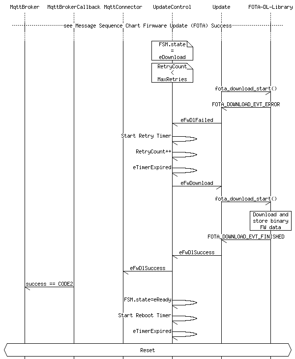
(FOTA) Failure On failure and if retry counter has reached the maximun number of retries, the error code will be transmitted to MQTT broker. Possible error codes are:
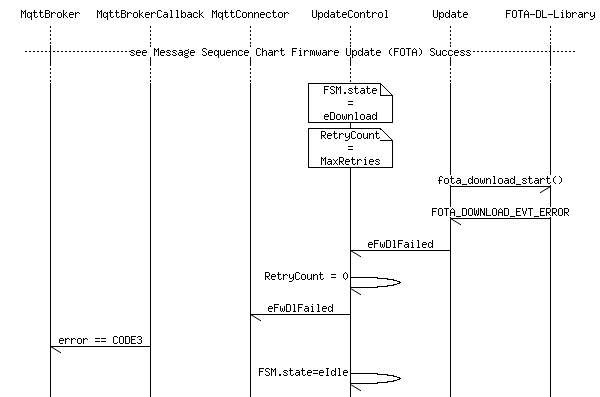